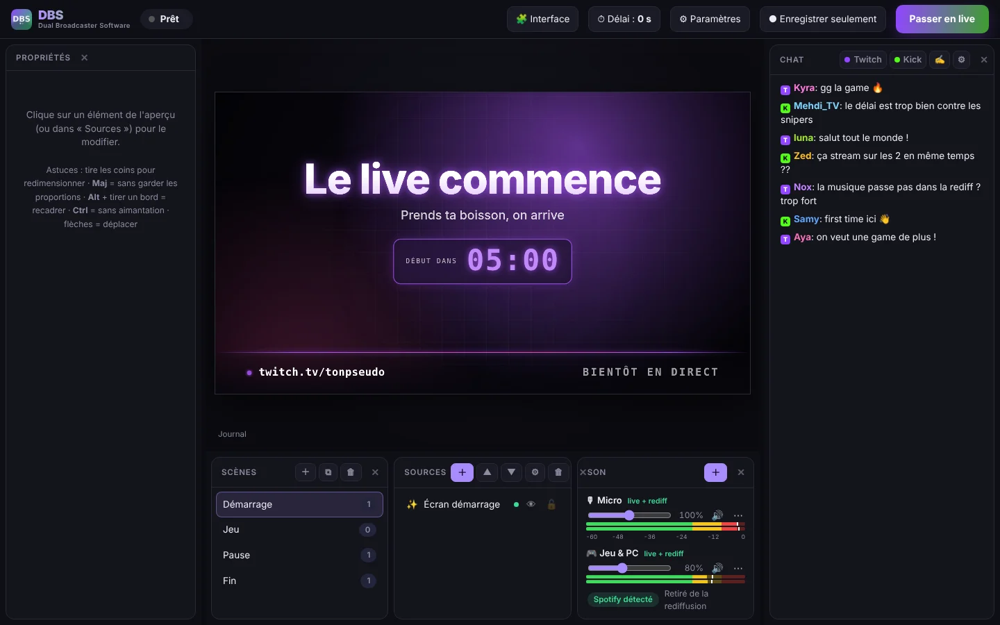
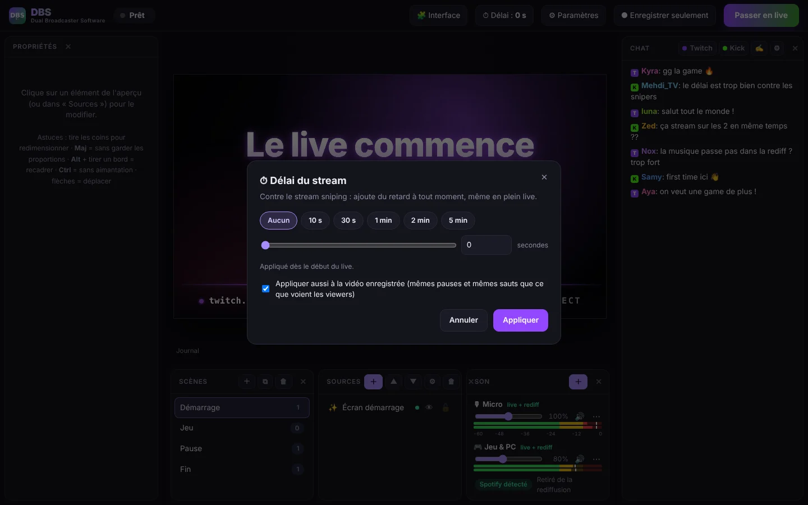

DBS (Dual Broadcaster Software) diffuse ton live sur les deux plateformes à la fois, et enregistre une rediffusion sans ta musique Spotify : fini les VOD coupées pour copyright.
Fichier .zip · environ 210 Mo · pas d'installation, pas de compte

Pensé pour être simple : tout est en français (et en 8 autres langues), tout se règle à la souris.
Un seul encodage envoyé aux deux plateformes. Si l'une coupe, DBS se reconnecte tout seul sans arrêter l'autre.
Tes viewers entendent Spotify en live, mais la vidéo enregistrée ne le contient pas. Tu peux la poster partout sans souci de copyright.
Jeu, écran, webcam, images, vidéos, textes… Déplace, redimensionne et recadre directement dans l'aperçu, comme dans OBS.
Alertes, chat, trackers, objectifs : colle un lien, c'est reconnu tout seul, avec fond transparent.
Démarrage, Pause et Fin du live prêts à l'emploi, avec compte à rebours qui démarre tout seul.
Les deux chats dans une seule fenêtre, avec filtres, surlignage des mentions, anti-bots…
Ajoute ou retire du délai à tout moment sans couper le stream. Tes viewers ne voient ni image figée ni coupure : le live fait juste un bond en arrière ou en avant.

Plusieurs micros, entrées et sorties audio (GoXLR, Wave Link, Voicemeeter…), vumètres en temps réel, choix piste par piste de ce qui va dans la rediffusion.
Change de scène, coupe ton micro, lance le live… même quand tu es en jeu.
Encodage par ta carte graphique, aperçu qui ralentit quand tu joues (ou que tu peux masquer), mode repos quand DBS est réduit : le moins de FPS perdus possible.
Quand une nouvelle version sort, un bouton apparaît dans DBS : un clic et c'est installé, sans rien re-télécharger toi-même.
Déplace et masque les panneaux, choisis la couleur de l'appli et ta langue parmi 9.
Pas d'installateur, pas de compte : tu dézippes et c'est parti.
Clique sur « Télécharger pour Windows » en haut de la page.
Clic droit sur le fichier › « Extraire tout… », par exemple sur ton Bureau.
Choisis ta langue. Un raccourci est créé sur ton Bureau et dans le menu Démarrer.
⚙ Paramètres › colle ta clé Twitch et ta clé Kick. Fais un essai avec « Enregistrer seulement », puis passe en live !
DBS s'améliore en continu. Télécharge toujours la dernière version avec le bouton en haut de la page.
Oui, totalement. Pas de pub, pas de compte, pas de filigrane.
Spotify par défaut, mais tu peux choisir n'importe quelle appli (Deezer, Apple Music, YouTube Music dans un navigateur…). Elle est retirée de la rediffusion enregistrée, même si tu la lances en plein live.
Non : celles-là sont faites par les plateformes à partir du live, donc avec la musique. Désactive-les (sur Twitch : « Stocker les anciennes diffusions ») et poste plutôt la vidéo sans musique que DBS enregistre dans Vidéos\DBS.
Pour streamer sur les deux plateformes en 6000 kbps, compte environ 16 Mb/s en upload. DBS t'indique le débit nécessaire dans ⚙ Paramètres › Vidéo.
Windows 10 (version 2004 ou plus récente) ou Windows 11, 64 bits. Une carte graphique récente (NVIDIA, AMD ou Intel) est conseillée pour encoder sans perdre de FPS en jeu.
Ouvre un ticket sur la page GitHub en expliquant ce qui se passe, et joins le fichier journal.txt qui se trouve à côté de DBS.exe.